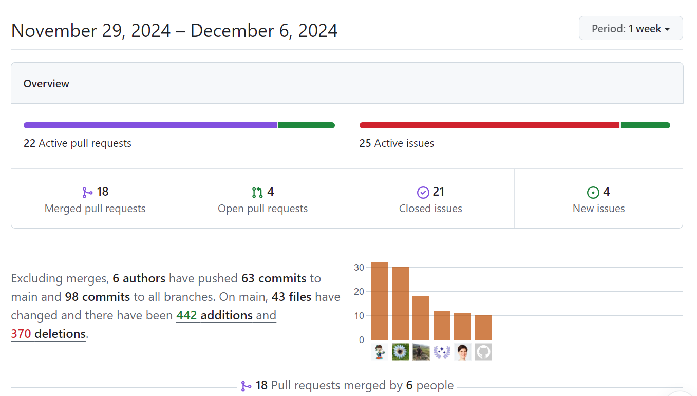

A Book Dash for the R Development Guide
Originally published on Forwards blog
This last month of 2024 started with a lot of updates to the R Development (Dev) Guide. It has been almost 4 years since the discussions about having such a guide started during useR! 2020. The guide has come a long way since then, and there are some exciting updates to share!
In the first week of December 2024, Saranjeet Kaur Bhogal visited Heather Turner at the University of Warwick, UK. We spent the week co-working on the R Dev Guide and managed to close quite a few old issues 🎉
Witnessing December turning into Closember!
We started the week walking through the oldest open issues and pull requests on the Dev Guide’s repository and decided to tackle them as a priority. Over the week, we managed to close approximately 21 issues and 10 pull requests (not made by a bot). This included some new issues and pull requests that were opened during the week. The oldest issue that we managed to close was from 2020 and Heather did a comprehensive review of an outstanding pull request from 2022 (still not merged, but we are happy that it has been reviewed and is up to date).
Here’s a peek into the insights from the Dev Guide’s GitHub repository for the week of the book dash:

A new cover image for the R Dev Guide
We have always wanted to have a cover image for the R Dev Guide and we finally have one! The cover image is inspired from an illustration that Saranjeet co-created with a Scriberia artist during The Turing Way book dash in June 2024. The illustration attempts to capture the essence of the R Dev Guide and the community around it. It depicts how the guide welcomes contributors to the R project from all levels, beginners, intermediate, and seasoned. The image shows contributors at beginner level putting the building blocks together, the contributors at intermediate level who have more familiarity with the tools using them to build the project further, and those at the seasoned levels constructing more advanced work.

Hello, Quarto!
We thought that at some point it would be good to migrate the R Dev Guide from Bookdown to Quarto. We achieved this faster than expected with Ella Kaye bringing her energy and enthusiasm to the task. She managed to migrate the guide to Quarto and yes, we are now live on Quarto!
Explore the Quarto version of the guide embedded below (it’s scrollable and clickable - try it!) 👀The full scale version is available at https://contributor.r-project.org/rdevguide/.
Community contributions
During the week, we also had some notable contributions from the community. In particular, Cam Race and Carlos Cámara contributed to the guide remotely. Cam Race continued on the work he started during the R Dev Day at SIP 2024 which was inspired from the contributions by Mahmoud Abdelrazek and Sarah Jaffa during the R Hackathon at RSECon24.
Overall, it was a very productive week! We are excited to see the R Dev Guide evolve further and welcome more contributors to the project. If you are interested in contributing, check out the contributing guidelines and the good first issues on the GitHub repository 🚀